本书作者：测试开发刚哥，文章版权归个人所有，未经授权请勿转载。
3.1 智能体的定义与主流开发范式
3.1.1 什么是智能体
智能体（Agent）可以理解为一个具备自主理解、规划、记忆和工具使用能力的数字化实体。
我们在前面了解到LLM、MCP，它们和Agent是啥关系呢？LLM是“大脑”，Agent是“身体”，Agent通过MCP协议访问外部能力（Tools / Resources）。
【纯LLM交互】
用户：帮我分析main.py文件
LLM：我无法直接访问文件，请您将文件内容粘贴给我
【Agent交互】
用户：帮我分析main.py文件
Agent：我来读取并分析这个文件
→ 调用文件读取工具
→ 分析代码结构
→ 提供详细分析报告
智能体让AI从一个只会内容生成的语言模型，进化成一个具备自主规划能力的行动者。
3.1.2 智能体的主流开发范式
-
简单LLM应用：直接调用模型API实现内容生成
-
单智能体：增加RAG、Tool、Memory等，让模型具备与特定环境交互的能力
-
工作流：将应用拆分，形成多个独立子智能体，再按照预定义的流程编排起来
-
多智能体系统：相比于工作流，多智能体系统采用的是模型驱动的、对话式的流程编排，各个子智能体具备更多的自主决策权
3.1.3 单智能体
典型的单智能体架构如下：
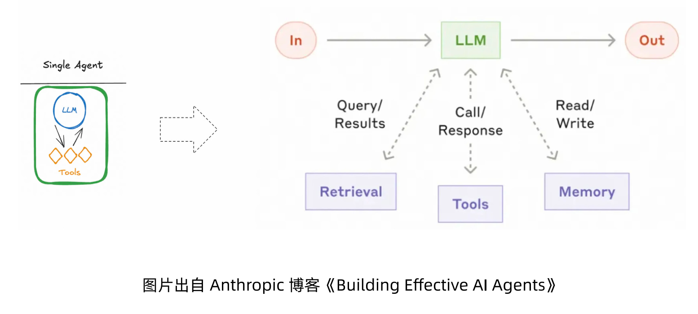
单智能体非常依赖底层模型能力。
3.1.4 工作流
1、Chain - 链式工作流
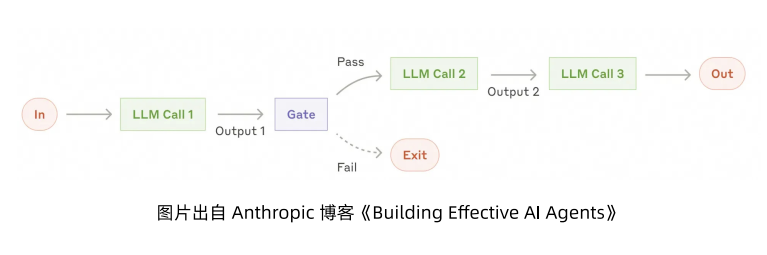
每一步由一个独立的LLM调用完成，并将上一阶段的输出作为下一阶段的输入。
2、Routing - 路由工作流
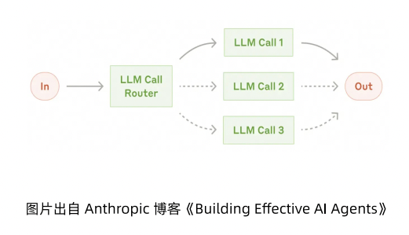
对输入进行分类，将它们分派到专门设计的下游任务或处理路径。
3.1.5 多智能体系统
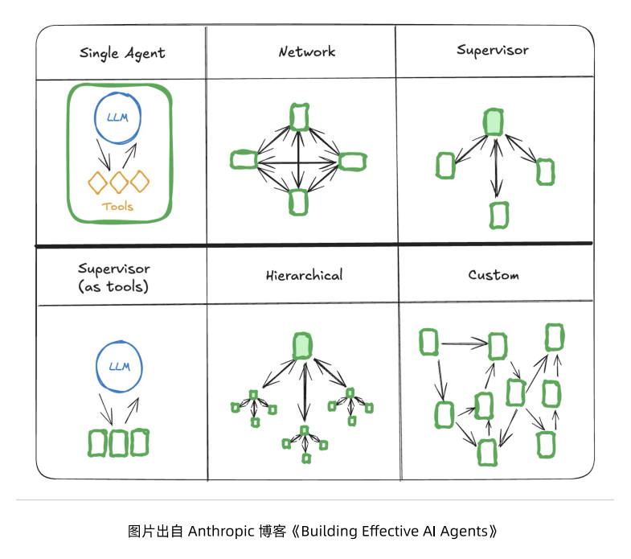
由多个具备一定自治能力的Agent组成，每个Agent有自己的角色、能力或工具使用范围。它们之间可以通过消息或上下文进行交互，协同完成复杂目标。
3.2 开发一个简单的智能体
3.2.1 智能体框架选型
Python：LangChain、LlamaIndex、AutoGen、CrewAI，开源的Google ADK、Strands等，阿里云开源的AgentScope等
Java：Spring AI Alibaba等
这本白皮书是阿里出的，后面就用Spring AI Alibaba为例进行介绍。
3.2.2 Spring AI Alibaba中的Agent定义
React Agent，采用ReAct模式，将推理（Reasoning）和行动（Action）交错进行，形成一个动态的“思考-行动-观察”循环。
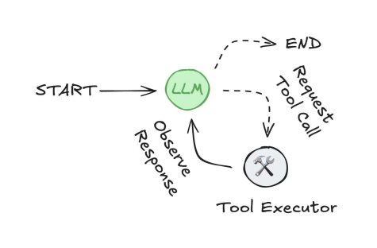
思考（Thought）：LLM分析当前的任务目标、已有的信息和可用的工具，然后生成一个关于下一步应该做什么的推理过程或计划。这个思路过程通常会以自然语言文本展示，解释了它的决策逻辑。
行动（Action）：智能体决定调用的外部工具（如搜索引擎、数据库查询API或自定义函数）。它会生成结构化的指令，明确指出要调用的工具名称和所需的参数。
观察（Observation）：应用程序执行工具调用，并将返回的结果（如搜索结果、API响应或函数返回值）作为观察信息反馈给智能体。
循环迭代：智能体收到观察结果，和之前的“思考”、任务目标结合，进入新一轮的思考阶段。它会评估上一步行动的结果是否使其更接近最终目标，并据此规划下一步的行动。
3.2.3 示例代码与Agentic API
1、快速定义一个简单的Agent
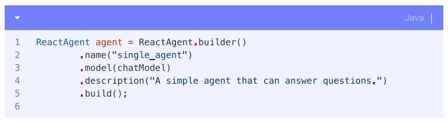
2、引导Agent的行为（设置Prompt提示词）
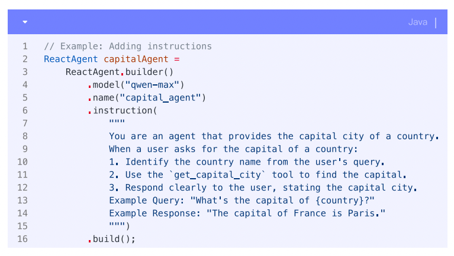
instruction包括以下信息：
-
核心任务或目标
-
性格或角色
-
行为约束
-
如何及何时使用工具
-
期望的输出格式
第四章上下文工程将介绍更多instruction编写技巧。
3、更多高级设置：为Agent配置工具、模型参数等
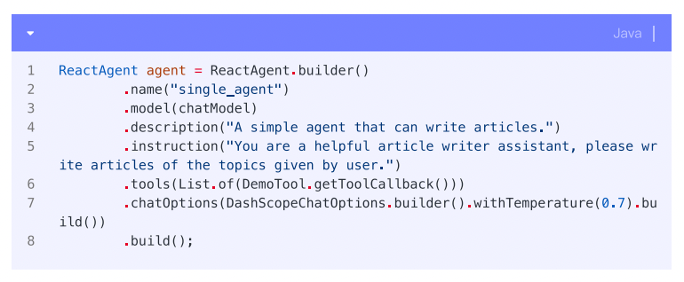
LLM会根据当前的对话内容和自身的指令，利用工具的函数/工具名称、描述（来自文档字符串或description字段）以及参数结构（Schemas）来决定调用哪一个工具。
3.3 工作流与多智能体
3.3.1 Spring AI Alibab中的多智能体类型
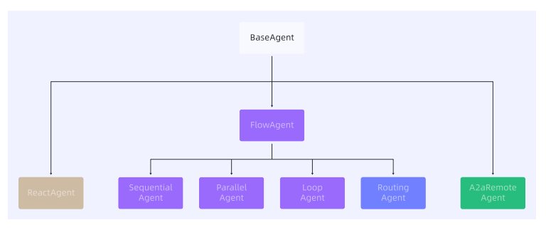
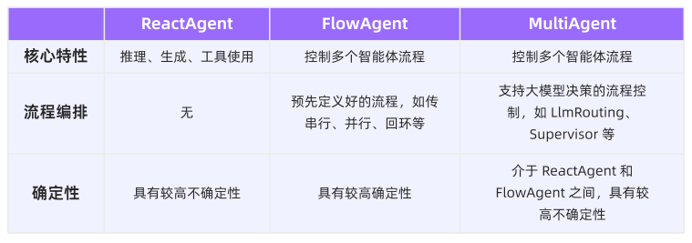
总体上分为三种Agent类型：
ReactAgent：基本智能体
FlowAgent：包含多个ReactAgent，按照特定流程协作
-
SequentialAgent 串行
-
ParallelAgent 并行
-
LoopAgent 循环
-
LlmRoutingAgent 大模型决策
A2ARemoteAgent：分布式Agent
3.3.2 工作流 - SequentialAgent
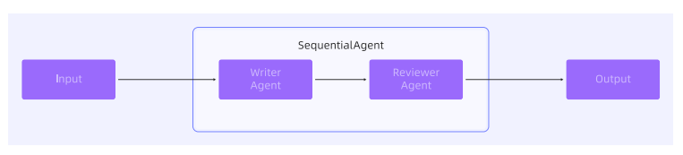
Agent依次执行，上一个Agent的输出会作为下一个Agent的输入。
示例，开发一个文章协作助手的智能体：
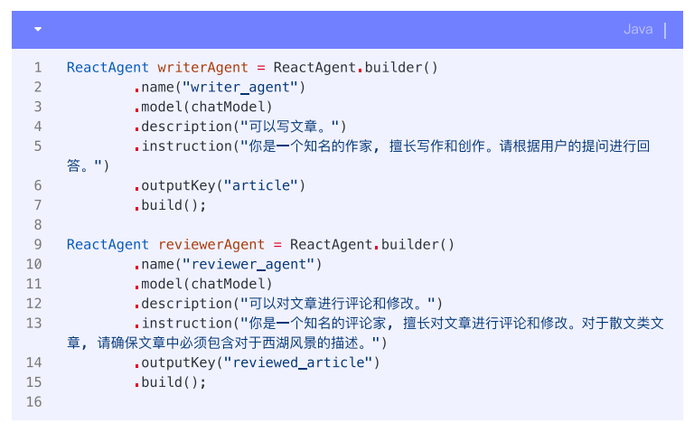
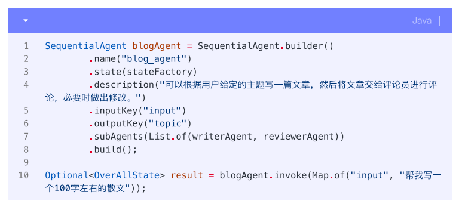
先定义了2个ReactAgent，然后定义了1个SequentialAgent将它们串联起来。
3.3.3 工作流 - ParallelAgent
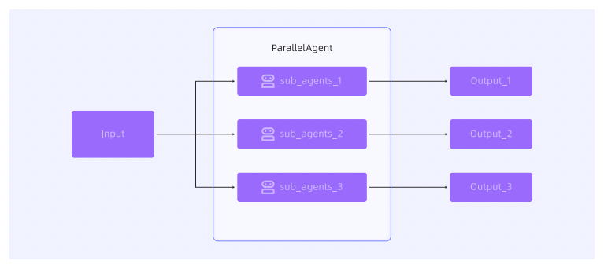
并行执行的工作流模式。
示例，开发一个智能搜索助手的智能体：
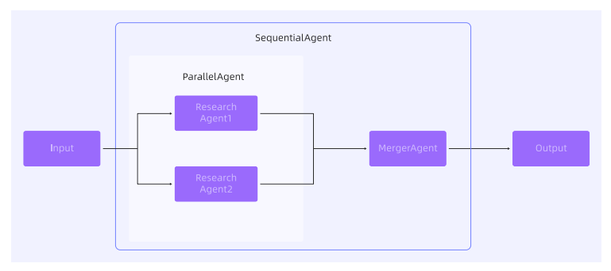
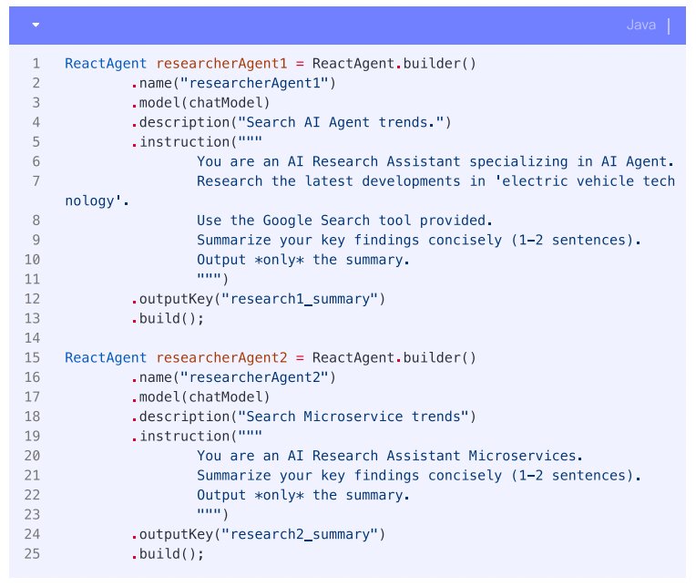
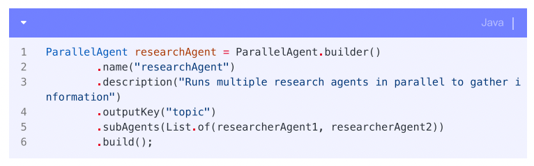
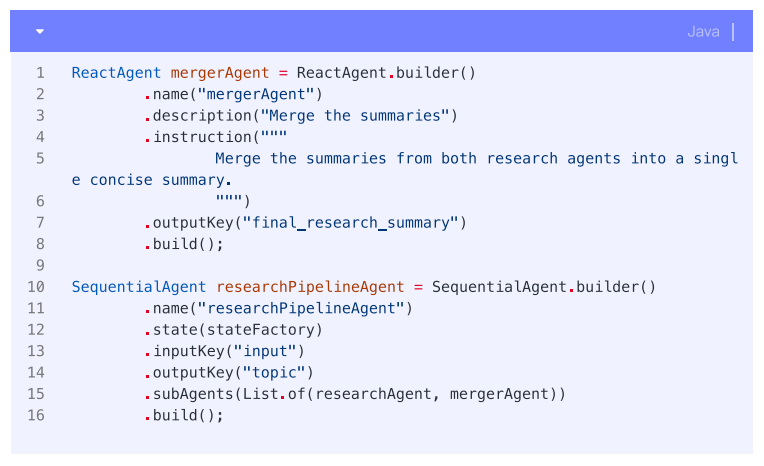
3.3.4 工作流 - LoopAgent
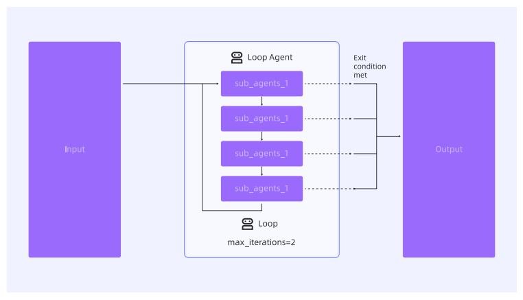
在指定的迭代次数内重复运行一系列代理，或者直到满足终止条件。
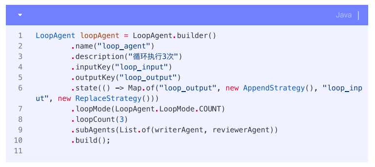
3.3.5 多智能体系统 - LlmRoutingAgent
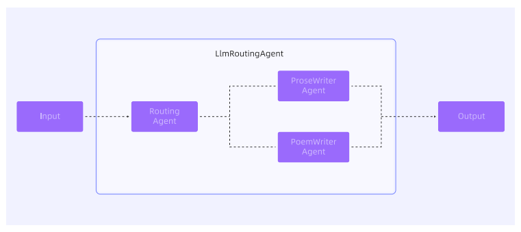
通过模型决策下一个子智能体走向。
内置prompt：
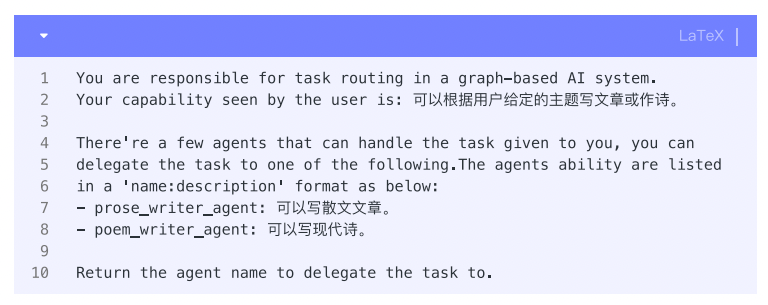
具体示例代码：
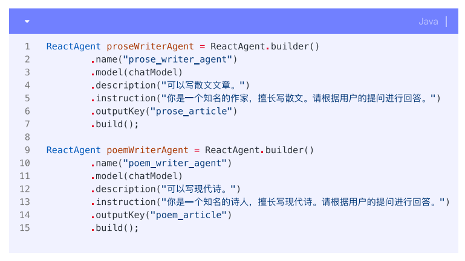
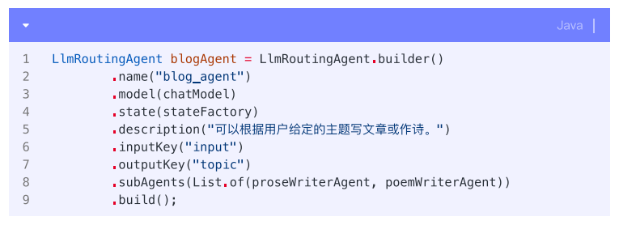
3.4 从单进程到分布式部署
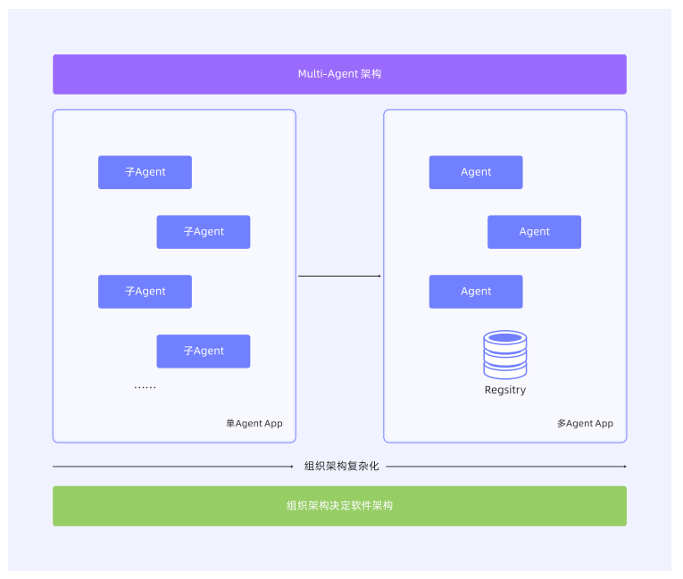
通过将Sub-Agent进行独立部署和维护，同时多个Sub-Agent间通过远程调用代替内存调用的方式，实现各个Sub-Agent独立迭代和维护。
3.4.1 什么是A2A协议
A2A协议，Agent2Agent，是Google在开源社区中推出的分布式智能体之间的统一通信协议。
1、A2A协议中的角色
-
用户（User）
-
A2A客户端（Client Agent）
-
A2A服务端（Remote Agent）
2、A2A协议中的元素
-
智能体卡片（Agent Card）
-
任务（Task）
-
消息（Message）
-
产出物（Artifact）
-
内容块（Part）
3、A2A协议中的交互机制
-
轮询（Polling）
-
流式传输（Streaming）
-
推送通知（Push Notification）
3.4.2 A2A协议的工作流
1、发现A2A Server的AgentCard
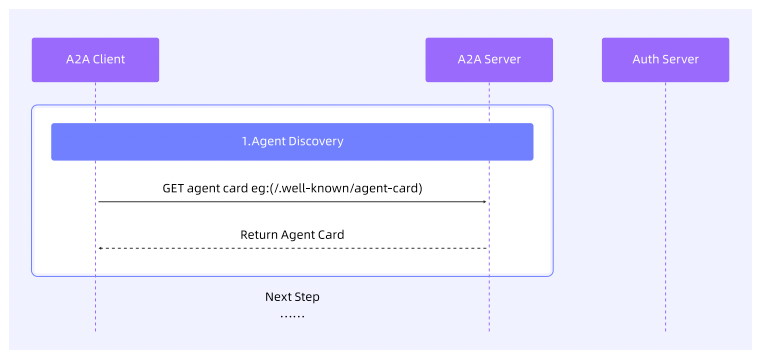
2、A2A授权和权限认证
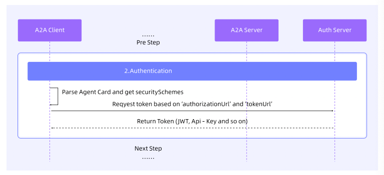
3、发起A2A请求
同步请求
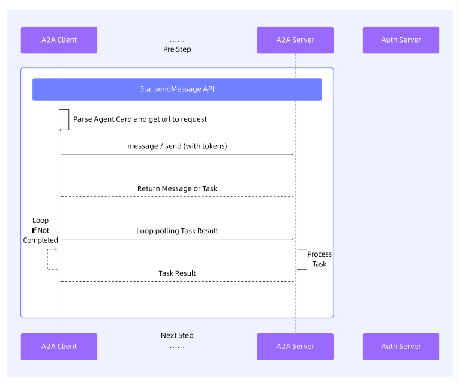
流式请求
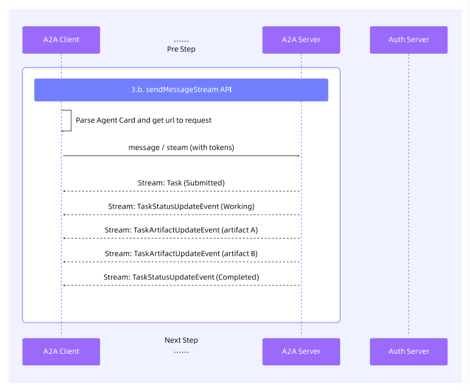
3.4.3 基于Nacos A2A Registry的自动注册与发现
A2A工作流程的首个步骤就是进行远端Agent的AgentCard获取和发现。
1、AgentCard的作用
AgentCard是A2A Server的数字名片，为发现与交互提供必要信息，包括以下内容：
-
身份信息：名称、描述、服务提供方。
-
服务端点：远端Agent的访问URL，包含完整的域名/IP，端口，URI等。
-
协议能力：支持的协议功能（如流式传输streaming或推送通知pushNotifications）。
-
认证方式：交互所需的鉴权机制（如Bearer令牌、OAuth2）。
-
技能列表：智能体可执行的任务或功能（AgentSkill对象），含技能ID、名称、描述、输入/输出模式及示例。
A2A Client通过AgentCard判断远端Agent是否适配当前任务、如何构建请求以及安全通信方式。
2、AgentCard的获取方式
直接配置
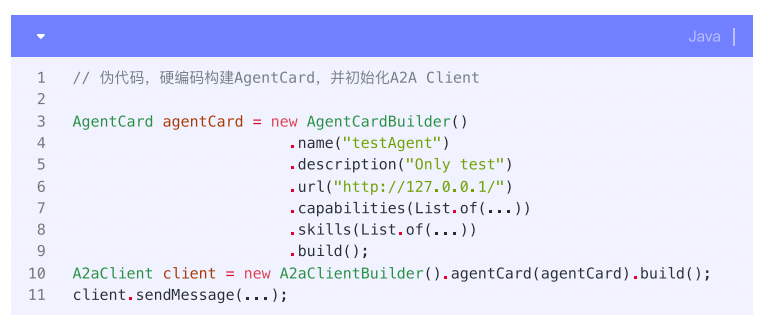
固定URI（Well-Known URI）
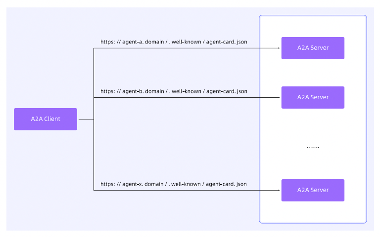
另外还有第三种方式，注册中心。
3.4.4 Nacos A2A注册中心
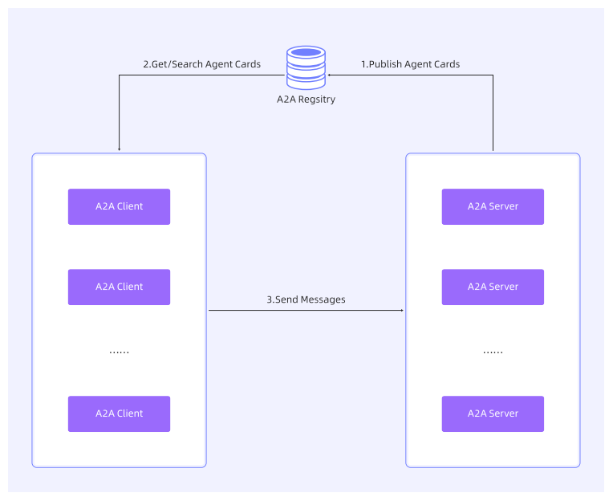
由注册中心维护AgentCard集合，客户端通过查询条件（如技能、标签、提供方）检索目标。
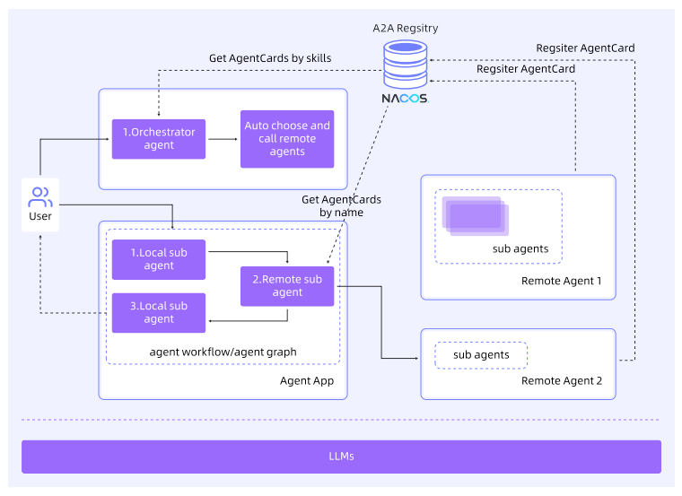
Nacos还支持对Agent的版本进行管理和快速回滚。Nacos除了作为A2A注册中心，还可以作为MCP服务的注册中心，以及Prompt的动态管理中心。
3.5 消息驱动的智能体开发模式
AI云原生架构下的消息队列必须具备以下特点：
-
支持长会话与大消息体的消息中枢。
-
实现削峰填谷、定速消费的智能调度能力。
-
提供优先级、权重控制的分级事件驱动机制。
-
构建高可靠、可恢复的Agent编排引擎。
3.5.1 消息模型提升AI通信效率
RocketMQ提出了一种创新的轻量化架构：
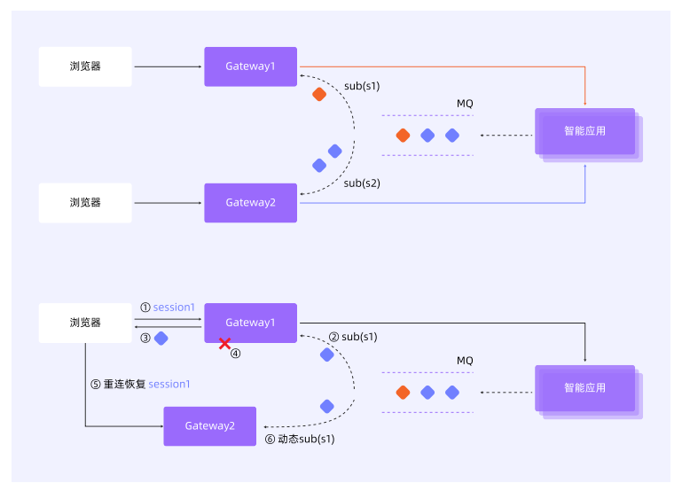
核心理念是：为每个会话或问题，动态创建一个独立的轻量级主题（Lite-Topic）。
以客户端与AI服务建立会话为例，系统自动创建一个以SessionID命名的专属队列，所有会话历史、上下文和中间结果均以消息形式在该主题中有序流转。
这一架构提供了四大核心能力：
-
百万级Lite-Topic支持：单集群管理百万级Lite-Topic，每个会话独立Topic，高并发下会话隔离，性能无损。
-
全自动轻量管理：Lite-Topic按需动态创建，连接断开后自动回收。
-
大消息体传输能力：支持数十MB以上消息，可承载长Prompt、图像、文档等。
-
严格顺序消息保障：在单队列内保证消息有序，确保LLM流式输出的token顺序不乱。
轻量级发送
Queue的消息是某个Broker专属的，一个Lite-Topic的发送只会到一台Broker，而不是轮询发送。
轻量级订阅
以client_ID维度维护订阅关系，管理消费进度。新增互斥消费模式。TTL到期后自动删除订阅关系。
消息分发策略
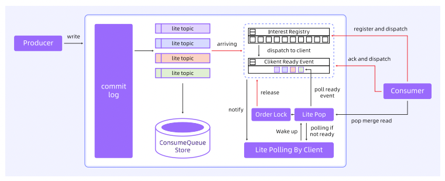
-
客户端发起读请求不再指定Topic，而是Broker根据client_ID识别订阅关系，并返回多个Topic的多条消息。
-
引入Topic ready set，在POP请求处理时直接访问就绪的topic。
-
当订阅上线、新消息发送、消息ACK后仍有消息、order Lock释放时往Topic ready set进行add操作。
3.5.2 基于消息驱动的智能化资源调度
核心能力：
-
天然削峰填谷，保护AI算力：消息队列可缓存突发请求。
-
定速消费，精准控制算力使用：支持为消费者组设置消费配额。
-
优先级调度，实现智能资源分配：抢占式优先级，权重动态分配。
3.6 基于统一元数据的AI协同开发模式
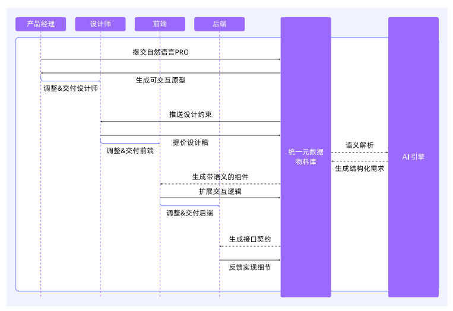
AI时代，可以基于统一元数据，所有交付物都使用HTML格式，每个角色的产出可以直接被下游角色使用，并且在开发全流程的每个环节都基于AI提效。
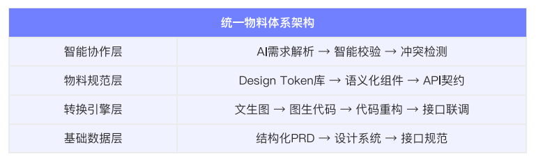
统一元数据需要长期建设，包括设计系统、组件库、API规范、状态管理等。从建立需求即代码的团队协作基准开始，从组件契约标准化入手，逐步构建跨工具链的智能开发环境。
参考资料：